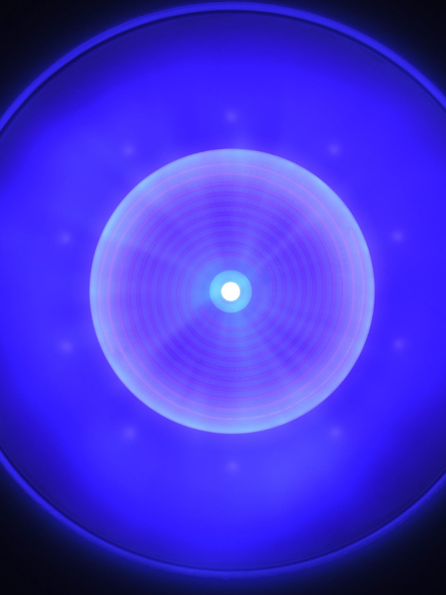
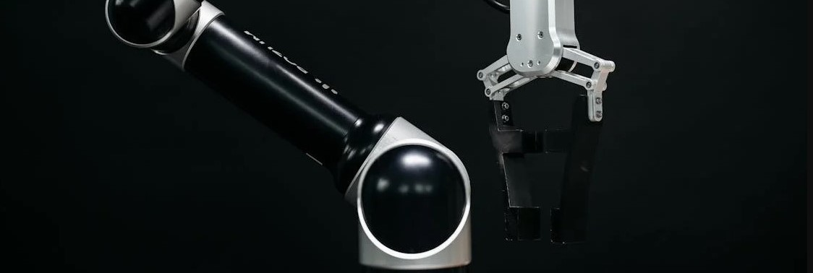

Education
B.S., Aeronautics & Astronautics from the University of Washington, with hands-on research across propulsion, autonomous systems, and spacecraft design.
B.S., Aeronautics & Astronautics
Coursework and lab work in propulsion, space systems, and embedded systems.
NASA Space Grant Consortium (2022–2024) · UW Technical Award for Innovation (SPACE Lab PPT Thrust Stand) · A&A Endowed Scholarships (Lace Erik, Robert Max Reynolds, Joseph F. Sutter) · Boeing Scholarship · Pierce College Dean's List

Pulsed Plasma Thruster Stand
Python-based data acquisition and calibration for a spacecraft thruster test stand; embedded serial communication with Arduino UNO for motor control.
View project →
Nonlinear Dynamics and Control Lab — Blue Origin RPO
Supported development of a dual-arm robotic testbed for autonomous spacecraft docking research, using AprilTag fiducial markers for precision tracking.
View project →Additional hands-on engineering experience from coursework, competitions, and independent projects.
Led rover navigation coding
Conducted heat-transfer testing
Built a Python orbital-mechanics simulation
Designed & simulated an airfoil
Designed a two-stage liquid rocket motor
Wind-tunnel tested a finite wing at the Kirsten Wind Tunnel
Measured drag in wind-tunnel testing
Tested propeller performance in a wind tunnel
Additional coding projects & experiments
Written technical reports from coursework, covering design, analysis, and lab procedure.
View All Reports →